The Word Processor Moment
Every conference keynote about AI in higher education tells the same comforting story. Remember the slide rule? The calculator replaced it. Math survived. We'll be fine. It's a great story. It's also the wrong one.
When Texas Instruments killed the slide rule, nothing structurally changed. Same equations, same classrooms, same professors, same four-year degree, same students sitting in the same seats. The calculator was a substitution — a faster tool doing the same job inside the same system. The slide rule makers lost. Everyone else shrugged. And this is exactly the story higher education is telling itself right now. AI is just a better tool. Update the syllabus, add an acceptable use policy, bolt a chatbot onto the LMS. Business as usual with a productivity boost.
But there's a better analogy, and it's one nobody in higher ed wants to talk about.
When the word processor replaced the typewriter, something fundamentally different happened. It didn't just make typing faster. It made revision free. And free revision changed everything. Cut, paste, restructure, collaborate, publish. The word processor didn't improve the typewriter market — it dissolved it and created entirely new ones. Desktop publishing, self-publishing, blogs, collaborative editing. The entire architecture of how humans create and share written knowledge was restructured. Not optimized. Not upgraded. Restructured. The question was never "how do we teach people to type faster?" The question was "what does communication become when the old constraints disappear?" And nobody who answered that question correctly was still selling typewriters.
AI is the word processor moment for higher education, and most institutions are responding like typewriter manufacturers bolting on electric motors in 1979. Technically an improvement. Strategically irrelevant. Because AI doesn't improve the existing model of higher education. It makes the existing model optional. When every learner has access to a patient, infinitely available, endlessly adaptive tutor, the lecture isn't enhanced — it's exposed. When skills can be validated through demonstrated competency rather than seat time, the credit hour isn't streamlined — it's revealed for what it always was: a unit of measurement designed for the convenience of institutions, not learners. AI doesn't just change how education is delivered. It changes who can access it, when they can access it, how fast they can move, and what "knowing" even means when everyone is augmented by the same cognitive tools. That's not a tool upgrade. That's a market creation.
And that's where this gets personal. There are 42 million Americans who started college and never finished. They didn't fail. The system failed them — rigid schedules, irrelevant courses, credits that didn't transfer, life that didn't wait. The calculator version of AI doesn't help these people. It just makes the same broken system slightly more efficient, which is another way of saying it fails the same people faster. The word processor version of AI builds something new. Pathways that recognize what adults already know. Credit evaluation that happens in minutes, not months. Degree maps that adapt to a learner's life instead of demanding life adapt to the institution. The word processor didn't make typists faster — it made everyone a publisher. AI-native education doesn't make the traditional university faster — it makes everyone a candidate for completion.
The slide rule companies didn't survive the calculator, but at least the math didn't change. The typewriter companies didn't survive the word processor, and neither did the old definition of what writing was for. Higher education is standing at that same fork right now. One path leads to a faster version of a system that already fails millions of people. The other leads to something built for the learners the old system left behind. The institutions still debating acceptable use policies are adjusting the margins on a typewriter. We're building the word processor.
Ready to build the word processor? Let's talk or join the conversation in Discord.